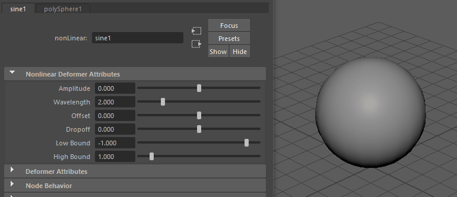
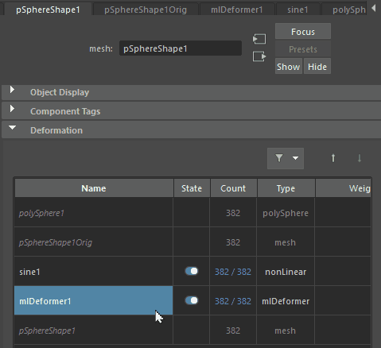
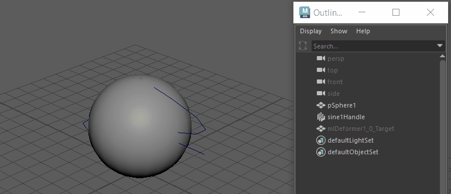
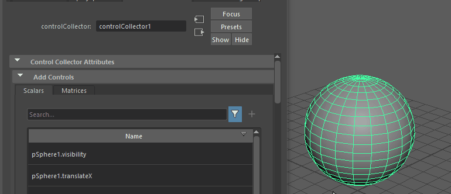
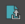
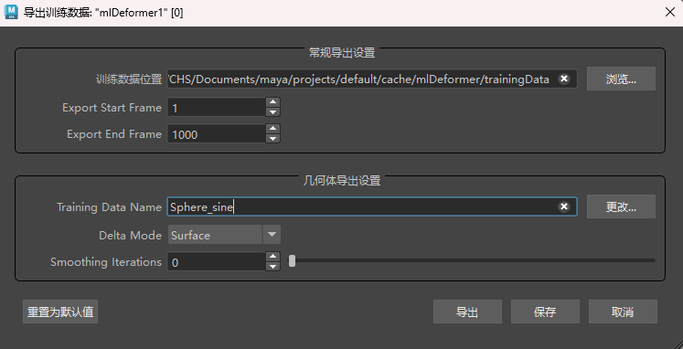
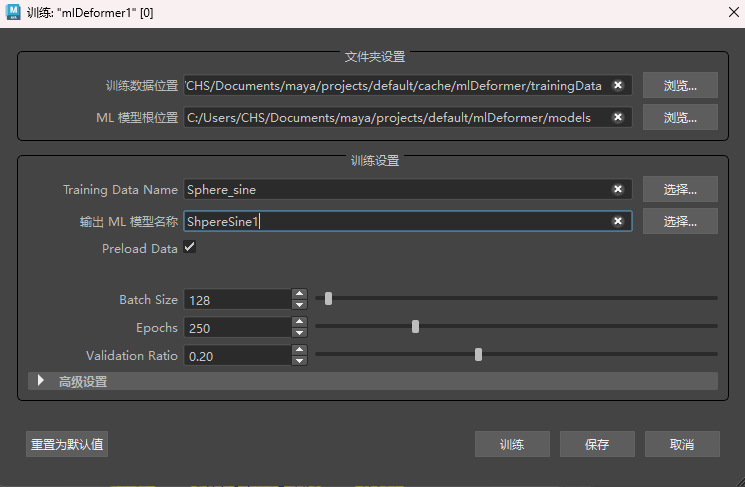
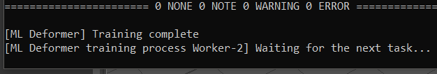
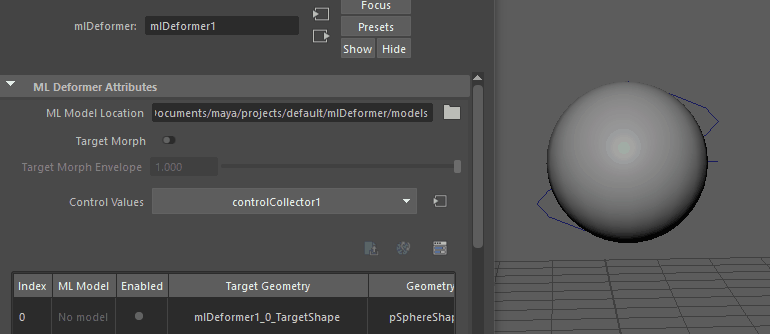

重要： 在您训练 ML 变形器时，系统可能会提示您下载并安装外部 Python 模块。默认情况下，附加模块的安装路径为 <MAYA_APP_DIR>/mlDeformer/<ml_deformer_version>/Lib/site-packages。如果需要手动下载这些模块和/或将其安装到自定义位置，请参见安装 Python 库以训练 ML 变形器。
本主题提供了一个示例，说明 ML 变形器如何模拟一个变形对象在另一个对象上的变形动画，并使用变形器属性构件（变形器堆栈）创建 ML 变形器。
如果已设置绑定，这种创建 ML 变形器的方法非常有用，因为它可避免传递变形目标网格的步骤。有关不同的工作流，请参见使用单独的目标几何体创建 ML 变形器，您可以在其中指定要在设置期间使用的动画控件。
提示： 可以在内容浏览器中测试和试验 ML 变形器示例文件（“窗口 > 内容浏览器 > 示例 > 动画 > ML 变形器”(Windows > Content Browser > Examples > Animation > ML Deformer)）。


在内容浏览器中对 ML 变形器动画进行采样
以下示例显示了使用变形器构件创建 ML 变形器的工作流
- 在此示例中，目标网格是一个附加了正弦变形器的球体，我们将使用它来表示复杂绑定。

具有正弦变形器的球体
- 选择球体，然后在“动画”(Animation)(F4)、“绑定”(Rigging)(F3) 或“建模”(Modeling)(F2) 菜单集中选择“变形 > ML 变形器”(Deform > ML Deformer)，以向其添加 ML 变形器。
- 在球体仍处于选中状态时，转到 pSphereShape1“属性编辑器”(Attribute Editor)选项卡。使用变形器属性构件上箭头 ，在变形堆栈中选择 ML 变形器，然后将其移至正弦变形器的上方。在变形堆栈中，任何高于 ML 变形器的对象都不会近似。

使用变形堆栈中的上箭头更改变形器评级
- 返回到“属性编辑器”(Attribute Editor)中的“ML 变形器”(ML Deformer)选项卡。在“目标几何体”(Target Geometry)列上单击鼠标右键，然后选择“为变形器创建目标后期 ML 变形器”(Create Target for Deformers Post ML Deformer)。
球体将添加到目标几何体。这将设置目标形状，默认情况下处于隐藏状态。可以在“大纲视图”(Outliner) (Shift+H/Ctrl+H) 中将其取消隐藏以调整属性。这样，您就可以看到它处理的是目标变形器，而不是原始形状。
显示原始正弦变形
- 选择球体并切换到“属性编辑器”(Attribute Editor)的“控件收集器”(Control Collector)选项卡，然后展开“添加控件”(Add Controls)表。单击鼠标右键，然后选择“添加选定对象”(Add Selected)或“全部添加”(Add All)，以选择要在“属性编辑器”(Attribute Editor)的“添加控件”(Add Controls)列表中控制变形的属性。（请参见 ML 变形器控件收集器属性主题。）
注： 您也可以单击列表右上角的“添加”(Add) () 按钮。
添加控件
这些属性将添加到“连接的控件”(Connected Controls)列表（位于“添加控件”(Add Controls)列表下方）中。
- 为变形训练设置“连接的控件”(Connected Controls)列表的“最小值”(Min)和“最大值”(Max)。
提示： 您可能需要拉伸“属性编辑器”(Attribute Editor)窗口，才能查看“最小值”(Min)和“最大值”(Max)列。
- 返回到“属性编辑器”(Attribute Editor)的“ML 变形器”(ML Deformer)选项卡，然后单击“导出训练数据”(Export Training Data)  以打开ML 变形器“导出训练数据”(Export Training Data)窗口，并进行以下设置：

- 训练数据位置(Training Data Location)：浏览到要保存训练数据的位置并为其创建文件夹。
- 导出开始帧(Export Start Frame)/导出结束帧(Export End Frame)：设置要从目标几何体变形捕获的帧范围。
- 训练数据名称(Training Data Name)：选择数据的名称。
- 导出过程完成后，在“属性编辑器”(Attribute Editor)的“ML 变形器”(ML Deformer)选项卡中，单击“训练模型...”(Training the Model...) 以打开训练 ML 变形器(Training ML Deformer)窗口，使用捕获的数据来训练变形。
- “训练数据位置”(Training Data Location)字段显示训练数据和模型的位置。
（您也可以在“ML 变形器属性”(ML Deformer Attributes)列表中的“ML 模型”(ML Model)单元上单击鼠标右键，然后从上下文菜单中选择“训练模型...”(Train Model...)。）
有关此窗口中每个设置的详细说明，请参见 ML 变形器训练设置。
- 在显示的“训练 ML 变形器”(Training ML Deformer)窗口中，设置以下内容：
- 输出 ML 模型名称(Output ML Model Name)：为经过训练的模型选择名称。
- 激活“预加载数据”(Preload Data)：加快训练速度（会增加内存使用）。

ML 变形器训练窗口
-
单击“训练”(Train)。将显示两个 Python 窗口。您可以在 ML 变形器作业监视器 中跟踪此训练和任何其他 ML 训练的进度。在 Python 窗口中看到 [ML Deformer] Training complete 消息时，训练已经完成。重要： 单击“训练”(Train)后，系统可能会提示您下载并安装外部 Python 模块。默认情况下，附加模块的安装路径为 <MAYA_APP_DIR>/mlDeformer/<ml_deformer_version>/Lib/site-packages。如果需要手动下载这些模块和/或将其安装到自定义位置，请参见安装 Python 库以训练 ML 变形器。
- 在“ML 变形器”(ML Deformer)列表中打开“已启用”(Enabled)，以便 ML 变形器应用所学习的变形。

“目标变形”(Target Morph)在“目标”(Target)和“ML 变形”(ML Deformation)之间切换
与其他变形器一样，可以调整“封套”(Envelope)设置以降低“ML 变形”(ML Deformation)的效果。